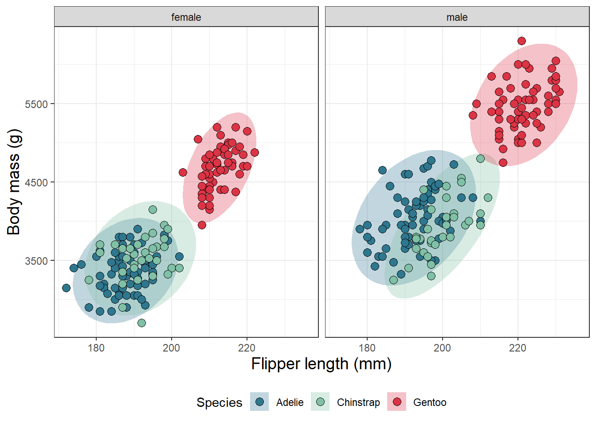

A Fantastaic Penguins Paper
Abstract
The Palmer Archipelago is home to a diverse array of penguin species, each with its own unique body size and flipper length adaptations. These adaptations play a crucial role in the survival and success of these species in their respective environments. For example, smaller body sizes and shorter flippers allow penguins to conserve energy while swimming, while larger body sizes and longer flippers provide greater mobility and stability on land. However, the interplay between these characteristics is complex and can vary greatly between species, making it challenging to draw broad conclusions about the relationship between body size and flipper length in penguins. Nevertheless, it is clear that these adaptations are important indicators of a penguin’s ecological niche and play a key role in shaping the diversity of penguin species found in the Palmer Archipelago.
Introduction
The Palmer Archipelago is a group of islands located off the Antarctic Peninsula. It is home to many species of penguins, including Adélie, chinstrap, and gentoo penguins (Figure 1). These penguins are known for their distinctive black and white feathers, as well as their striking red and yellow bills and flippers.

Penguin bills and flippers are important adaptations for life in the cold, harsh environment of the Palmer Archipelago. The bills of penguins are used for hunting, feeding, and social interactions. They are sharp and pointed, allowing the penguins to catch and hold onto their prey. The flippers of penguins are used for swimming and maneuvering through the water. They are long and streamlined, helping the penguins to move quickly and efficiently.
The size and shape of penguin bills and flippers vary among different species and can even vary within a single species. For example, Adélie penguins have a shorter, thicker bill than chinstrap penguins, which have a longer, thinner bill. Gentoo penguins have the longest bill of all penguin species, and they also have the longest flippers.
The bill and flipper dimensions of penguins in the Palmer Archipelago are important for their survival in the cold, harsh environment. The size and shape of these body parts help the penguins to find food, avoid predators, and navigate through the icy waters. In addition, the bill and flipper dimensions of penguins are also used by scientists to study the evolution and ecology of these fascinating animals.
Methods
Method 1
Results
A plot of body mass and flipper length can be seen in Figure 2.

Mean bodymass of adelie penguins on biscoe island is 3709.7
All data obtained from palmerpenguins (Horst, Hill, and Gorman 2020).